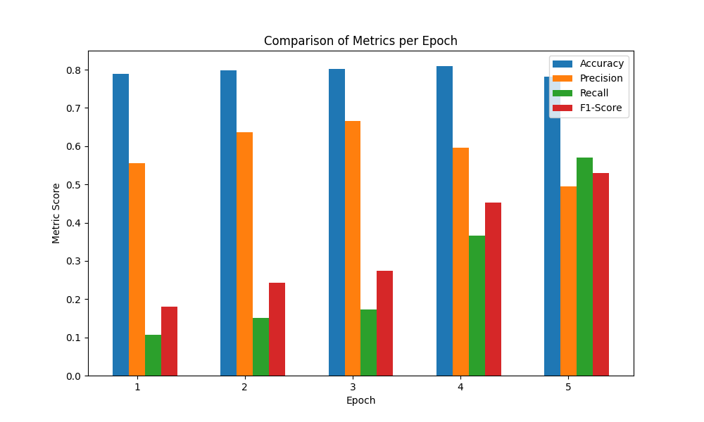

MLCQ God Class CuBERT Evaluation Result
Comparison Table
| Epoch |
Accuracy |
Precision |
Recall |
F1-Score |
| 1.0 |
0.7884 |
0.5556 |
0.1075 |
0.1802 |
| 2.0 |
0.7977 |
0.6364 |
0.1505 |
0.2435 |
| 3.0 |
0.8023 |
0.6667 |
0.1720 |
0.2735 |
| 4.0 |
0.8093 |
0.5965 |
0.3656 |
0.4533 |
| 5.0 |
0.7814 |
0.4953 |
0.5699 |
0.5300 |
Bar Plot

Evaluation Results
Epoch 1
- Test Accuracy: 0.7884
- Test Precision: 0.5556
- Test Recall: 0.1075
- Test F1-Score: 0.1802
Epoch 2
- Test Accuracy: 0.7977
- Test Precision: 0.6364
- Test Recall: 0.1505
- Test F1-Score: 0.2435
Epoch 3
- Test Accuracy: 0.8023
- Test Precision: 0.6667
- Test Recall: 0.1720
- Test F1-Score: 0.2735
Epoch 4
- Test Accuracy: 0.8093
- Test Precision: 0.5965
- Test Recall: 0.3656
- Test F1-Score: 0.4533
Epoch 5
- Test Accuracy: 0.7814
- Test Precision: 0.4953
- Test Recall: 0.5699
- Test F1-Score: 0.5300